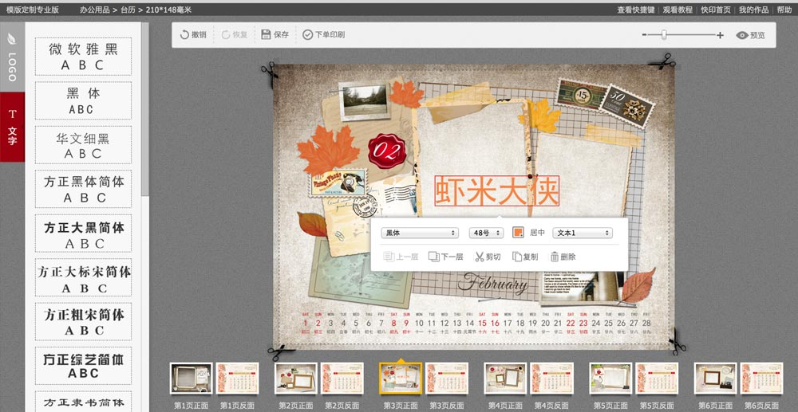
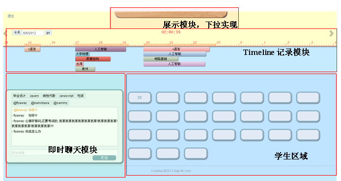
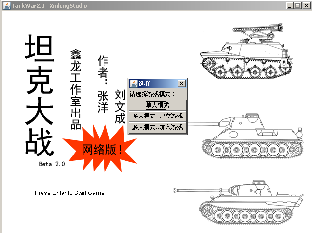
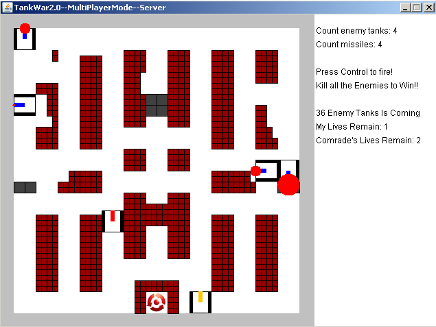

求职意向
- nodejs全栈开发
- angularjs开发
- 移动端html5或hybrid前端技术开发
技术性质
熟练前端基本技术及html5/css3技术，熟悉跨浏览器兼容细节及js原生编程，项目经验ie6+，熟练ps切图及图片压缩优化技术，熟练coffeescript,stylus,less,jade等脚本模板工具。
个人常用的有jquery, bootstrap, express, meteor，handlebars，underscore，q，熟悉angularjs及其指令开发技术，熟悉mongodb，了解hybrid开发工具如phonegap, ionic，了解emberjs等其他mvvm框架。
熟练gulpjs, grunt构建工具, 熟悉TDD开发模式及其相应测试工具如：mocha, karma, sinonjs, should, 熟练git及git-flow开发流程。
熟练vim, webstorm开发工具，熟悉linux开发环境, mac使用者。
喜欢36kr, 虎嗅, geekpark, hacknews等web新闻聚合网站，关注互联网创业，喜欢github，喜欢探索新型优秀框架，如d3，phantomjs，nodewebkit，对实时web后端技术有浓厚兴趣，如 pomelo, meteor等, 喜欢看源码，并精读过meteor大量核心源码。
接触过php, java, c，go等多种语言，代码洁癖者，喜欢做ppt分享技术，喜欢胡侃，喜欢电影，电影阅历1000+，在github上写过小说，不单想成为全栈工程师，更想成为有情怀懂产品的程序猿。
个人项目作品
全栈开发构建工具
- 支持全栈混合开发，即代码可前后端共用
- 支持大量格式并自动转换, 如coffee .less .angular，且可任意插件扩展
- 使用gulpjs优化，如图片压缩, 代码压缩
- 自动生成sourcemap, manifest文件, 自动版本控制
- 支持CommonJS规范，前端代码异步加载, 类似seajs
- 集成单元测试工具，并可前后端混合端到端测试
- 支持命令行
基于meteor实时web框架
- 改造meteor核心源码，使之能快速无缝使用第三方框架，如angularjs
- 采用xpm进行代码管理
- 独立connect模块使得支持中间件扩展
seajs组件库 (猪八戒快印项目)
- 基本Dialog、alert、confirm等对话框
- 常用jQuery插件及常用方法
- cmyk颜色拾起器等
在线名片及台历制作工具 (猪八戒快印项目)
- 主要功能有：文字拖拽并自动对齐，图片旋转转换，单选及多选快速操作，cmyk颜色选择器制作，操作历史记录管理，画布放大缩小及缩略图生成, 多画布支持, 印刷附加工艺磁条、编码、条形码支持等。
工作经历（三年）
重庆猪八戒网络有限公司 前端工程师
- 管理快印项目前端团队
- 快印项目(http://kuaiyin.zhubajie.com)前后台前端规范制定及技术选型制定, 前台使用seajs, aliceui, stylus，后台使用bootstrap, 并用grunt构建
- 快印项目在线名片/台历diy编辑器开发，通用组建ui库开发
- 行业运营cms系统专题页制作
- 服务商培训中心前后台功能模块开发
厦门红蛋彩印 前端工程师
- 快印项目（迁往重庆与猪八戒合作）
北京三人行网络教育 前端工程师
- 三人行网站(http://www.3ren.cn)一期改版：整体重构，tangram向jQuery转型，jQuery插件开发，规范代码及命名，使用less等
- 三人行分享对话框、认证、话题等社交模块开发
- 换肤、设置、关注、粉丝、日志、评论等页面模块开发
- jsonp实现chrome插件及浏览器收藏夹插件开发
- 二期改版负责班级主页、日志、任务集、百宝箱、投票系统等页面模块开发
- 维护个人主页、日志、feed区等页面
- 三人行手机html5项目筹划 (离职)
北京利仁轩商贸有限公司 前端工程师
- 负责公司网站及礼品在线演示(flex)等页面开发
其他经历
工程设计 “java实现多人网络版坦克大战”
- 用java实现多人版网络坦克大战，课题分数90+，对面向对象设计模式及软件规划有了一次深刻认识。
毕业设计 “基于网络教学平台的学生课程交流系统”
- 服务器使用php/mysql, 用timeline模式记录学生的课程时段，实现课程检索及学生的实时互动，对业务层与表现层的分离及WebApp有了系统性的认识。
参加2012百度PMSTAR高校互联网设计大赛
- 组队参加2012百度PMSTAR高校互联网设计大赛，担任组长，参赛作品"TagLife(标签生活)"入围，负责产品设计、需求分析、竞争环境分析并制作原型，TagLife是一个融合统计个人每天的所有“生活标签”来实现SNS模式的“实时、统计、推荐、交流”的微社交平台
参考图片



